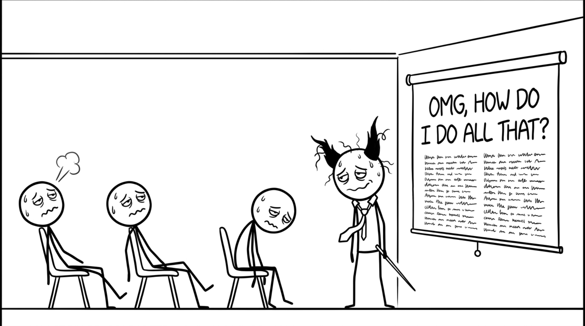

<section id="omg" data-transition="fade" style="display:flex; align-items:center; justify-content:center; padding:0; background:#fcfcfa">

<p style="position:absolute;left:0;bottom:10px;width:1920px;margin:0;text-align:center;font-family:'Patrick Hand', 'Trebuchet MS', sans-serif;font-size:22px;color:#8a8f98">Copyright Dobromir Montauk 2026</p>
<aside><b>OMG, how do I do all that?</b> Twenty buckets. Nobody does all twenty every week, and nobody should try. I don't. In any given week, two or three of them matter, and the rest can wait. The hard part isn't knowing the buckets; it's knowing which two or three this week, because the world keeps changing under you.</aside>
</section>
